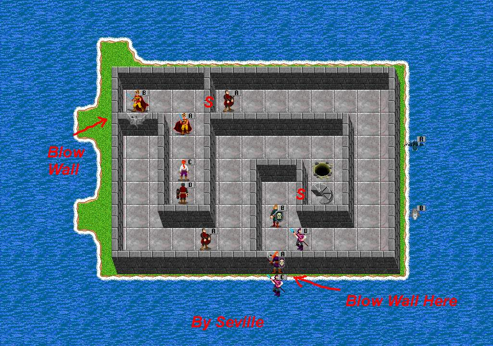
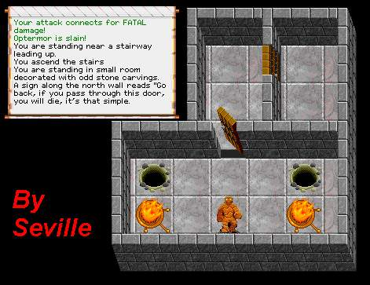
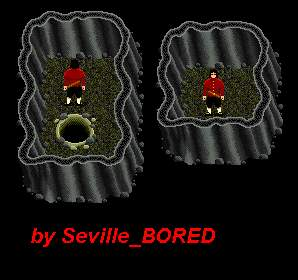

| Guardian Island |
| Back to Nork. |
 |
 |
| Single Guardian Lair. Like the Sign says, You will die if you go in here. Gear will poof in here. Newbies stay out! One hole goes to lower level of building and the other goes to a spot above Lich Lair #1. |
| South of the Prisons is Guardian Island. Blow the wall to get in. Psi attack, poison and physical attacks are the majority attacks of the crits. Go upstairs to get to the Guardian Lair. Not Recommended for any crit under 18th level. Dropping down hole will lead to lower level of the building. |
 |